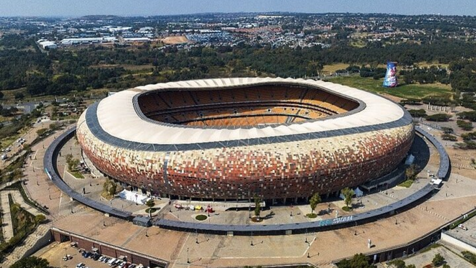
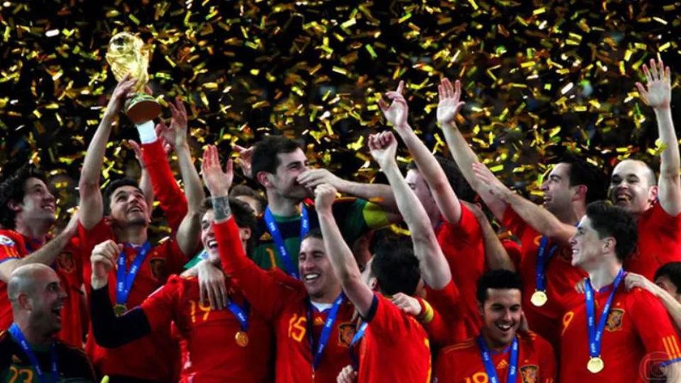

Quando a Copa do Mundo de 2010 foi realizada, o mundo ainda sentia os efeitos da crise financeira global de 2008, considerada a mais grave desde a Grande Depressão de 1929. Muitos países enfrentavam desemprego elevado, dificuldades econômicas e aumento da dívida pública. Ao mesmo tempo, economias emergentes como China, Índia, Brasil e África do Sul ganhavam maior destaque no cenário internacional, enquanto a globalização econômica e os avanços tecnológicos continuavam a integrar mercados e sociedades em escala mundial.
A África do Sul, país-sede do torneio, era uma democracia consolidada desde o fim do regime do apartheid em 1994. Governada por Jacob Zuma, buscava afirmar-se como liderança política e econômica do continente africano. Com aproximadamente 50 milhões de habitantes e um PIB em torno de US$ 375 bilhões, o país possuía a economia mais industrializada da África, embora ainda enfrentasse profundas desigualdades sociais, elevados índices de desemprego e problemas relacionados à criminalidade.
A realização da Copa de 2010 teve um significado histórico especial por ser a primeira edição do torneio realizada no continente africano. O evento foi visto como uma oportunidade para apresentar uma nova imagem da África ao mundo, destacando sua capacidade de sediar competições globais e atrair investimentos internacionais.


Os investimentos relacionados à Copa ultrapassaram US$ 3 bilhões e foram direcionados principalmente para a construção e modernização de estádios, ampliação de aeroportos, melhoria das rodovias, expansão dos sistemas de transporte público e modernização das telecomunicações. Entre as obras mais importantes destacaram-se a construção do Soccer City, em Joanesburgo, e a implantação do sistema de transporte rápido Gautrain.
O legado da Copa gerou avaliações divergentes. Por um lado, houve melhorias significativas na infraestrutura urbana e de transporte, além do fortalecimento da imagem internacional da África do Sul e do continente africano. Por outro, alguns estádios construídos para o torneio apresentaram altos custos de manutenção e baixa utilização após o evento, tornando-se exemplos de estruturas subutilizadas.
De forma geral, o principal legado da Copa de 2010 foi simbólico e político. O torneio demonstrou que um país africano possuía condições de organizar um megaevento esportivo de alcance global, contribuindo para ampliar a visibilidade internacional da África e reforçando sua participação nos debates econômicos e políticos do século XXI.
A final foi disputada no Soccer City, em Joanesburgo, diante de aproximadamente 84 mil espectadores. A seleção da Espanha conquistou seu primeiro título mundial ao derrotar a Holanda por 1 a 0 na prorrogação, com gol de Andrés Iniesta.